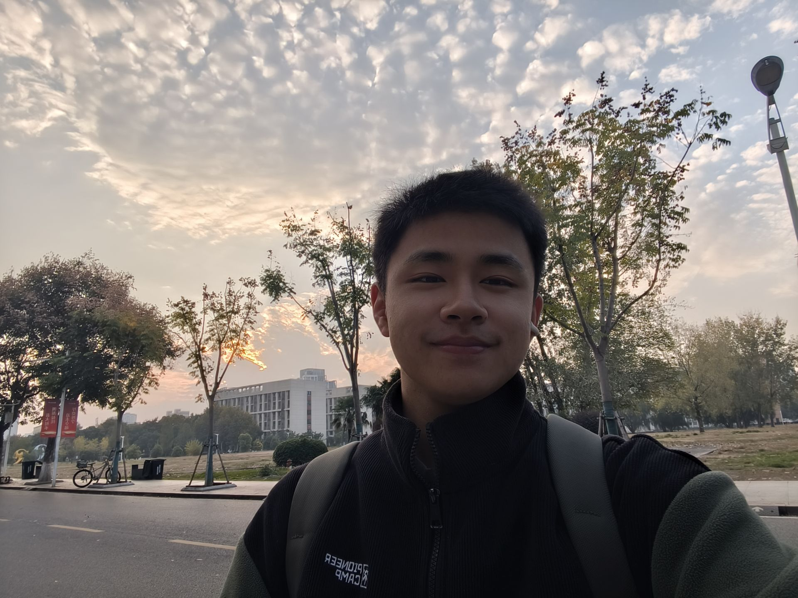

武汉理工大学 · 本科 · 自动化专业
我是高子明，关注自动化与嵌入式方向。喜欢把复杂问题拆成清晰的方案，重视真实落地、 文档整理和持续迭代，努力把所学转化为可复用的成果。
成长背景：生于党员与退役军人家庭，家风塑造了责任与担当意识，从小建立服务他人、 对集体负责的价值观念。
班级工作：从小学到大学长期担任班长，负责班级事务统筹、协调同学关系、组织集体活动， 积累了扎实的组织协调能力。
志愿服务：累计志愿服务超 150 小时，参与社区服务、返乡社会实践、校级大型活动保障等， 在服务与协作中深化了对责任的理解。
思想成长：递交入党申请并参加党校培训，结合志愿服务与基层实践，持续深化对公共服务的 认识与自我要求。
围绕“PEMFC 老化分析与寿命精准预测”核心需求，运用小波去噪、GRU 时序预测、 特征重要性分析等方法，基于 Python 3.10 开发老化分析软件，完成数据预处理、 关键特征筛选、SOH 寿命预测与可视化，实现电压去噪信噪比提升≥15%、SOH 预测误差≤5%。
基于现成原理图，运用元件布局优化、电源/地线规划、信号走线规范等原则，使用嘉立创 EDA 完成从封装设置、原理图导入、元件布局、规则校验到生产文件输出的全流程工作，确保布线合规、信号稳定。
正在系统学习华为昇腾 CANN 平台的 AI 算子开发（Ascend C），当前完成 GELU 激活算子： 支持 fp16 / fp32 双精度，fp32 采用手写精确 erf（P/Q 有理近似）；通过双缓冲、软件流水、 动态 tile 与多核 32B 对齐分块做性能优化，并在持续完善中。
课内基础扎实：GPA 3.75/5.0，英语 CET-4（520），已修模拟电子技术、电路原理、 Python 程序设计基础等课程，未来课程包括数电、自动控制原理、算法与数据结构。
自主学习有规划：自主安排 STM32、C++、MATLAB、LaTeX 等内容的学习，用项目驱动的方式 检验所学，持续提升系统分析与工程实践能力；当前最新的学习方向是昇腾 AI 算子开发。
擅长清晰有条理地传递想法，累计获校级演讲奖项 2 项、院级演讲奖项 4 项， 多次在课堂展示、项目汇报中完成技术内容输出。
担任班级班长，获评院优秀学生干部，具备基础事务统筹与团队协调能力；累计参与志愿服务 超过 150 小时，在活动组织与协作中积累了实际经验。
邮箱：370295@whut.edu.cn
GitCode：https://gitcode.com/2404_88893172
GitHub：https://github.com/imsquner
CSDN：https://blog.csdn.net/2404_88893172